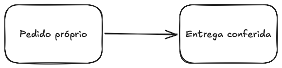
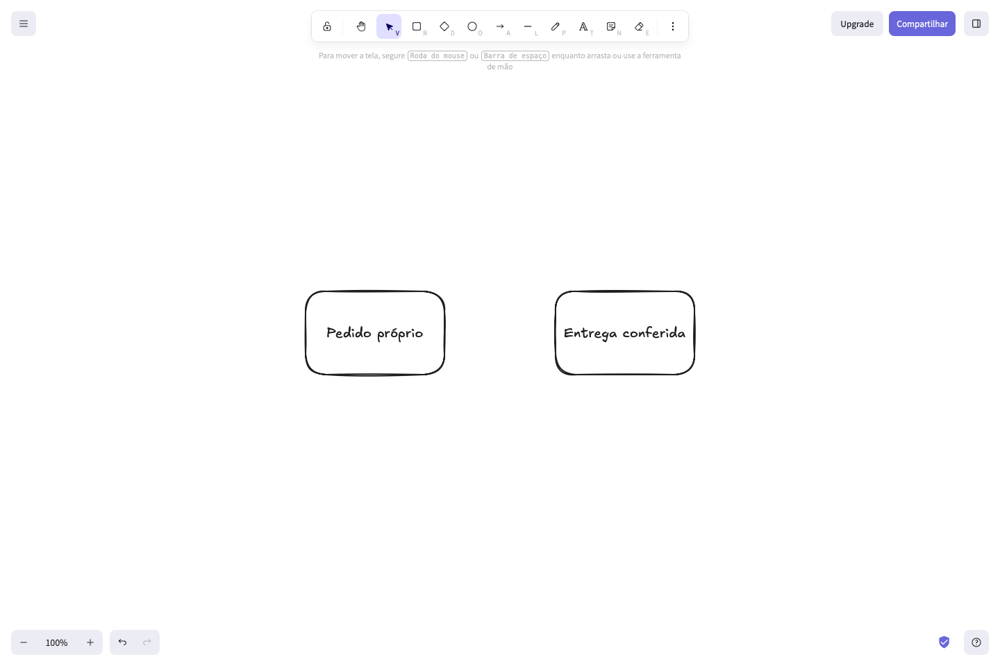
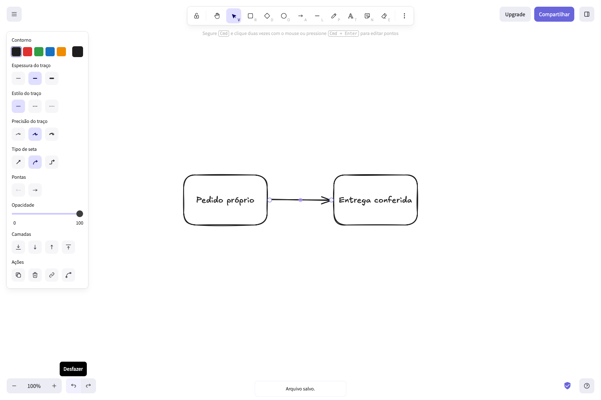

AJUDA INDEPENDENTE · AMOSTRA PESSOAL
Excalidraw: guardar um desenho e continuar trabalhando nele
Use o arquivo editável para continuar o desenho em outra sessão. Use o PNG quando precisar apenas da imagem. Guarde os dois: o armazenamento do navegador pode ser apagado.
1. Criar um fluxo simples
Escolha Retângulo e arraste para desenhar uma caixa. Pressione Enter para escrever dentro dela e clique fora para concluir. Repita para uma segunda caixa. Escolha Flecha e arraste entre as caixas. Volte para Seleção ao terminar.
O exemplo abaixo tem duas caixas, dois textos e uma flecha. É um desenho próprio fictício.

2. Baixar a imagem
No menu superior esquerdo, escolha Exportar imagem.... Deixe Fundo ligado e escala 1×. Clique Exportar como PNG e confira que o arquivo apareceu na pasta de downloads. A ação Copiar para a área de transferência não cria uma cópia de segurança.

3. Guardar o desenho editável
No menu, escolha Salvar como... → Salvar em um arquivo. Guarde o arquivo com extensão .excalidraw, sem substituir essa extensão por .png. A imagem PNG e o arquivo editável têm funções diferentes.
Baixar o desenho editável próprio
4. Continuar em outra sessão
Abra uma sessão vazia do Excalidraw. Clique Abrir e selecione o arquivo .excalidraw que você guardou. Confira o texto, as caixas e a flecha antes de editar. A posição do desenho na tela pode mudar porque o produto o centraliza ao abrir.
Nesta amostra, a abertura em uma sessão separada conservou os cinco elementos do desenho. A imagem exportada depois da abertura ficou igual à imagem original. Essa conferência é desta amostra, não uma garantia de recuperação de todos os arquivos.
5. Recuperar uma exclusão recente
Com Seleção ativa, clique na flecha visível e pressione Delete. Confirme que ela desapareceu.

Baixar a captura da flecha removida

Clique Desfazer. A flecha deve reaparecer ligada às caixas.

Baixar a captura da flecha recuperada

Desfazer ajuda a corrigir uma edição recente. Ele não substitui uma cópia de segurança e não garante recuperar armazenamento apagado, outra sessão ou um arquivo sobrescrito. Antes de alterar um trabalho importante, guarde uma nova cópia do arquivo editável.
Arquivos e alcance da conferência
As imagens e o arquivo editável desta página são próprios. Você pode baixar os arquivos originais nas ligações acima. O manifesto dos arquivos informa tamanhos e hashes. A conferência delimitada observou diferenças de metadados; ela não garante recuperar todo arquivo ou armazenamento do navegador.
Procedimento observado em 05/10/2026, no produto público https://excalidraw.com/, interface Português Brasileiro. A amostra de 04/10 permanece com seu resultado histórico parcial. Este material não comprova trabalho aceito por um cliente, economia de tempo ou manutenção contratada.